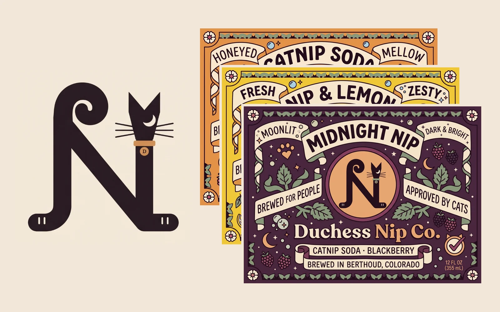
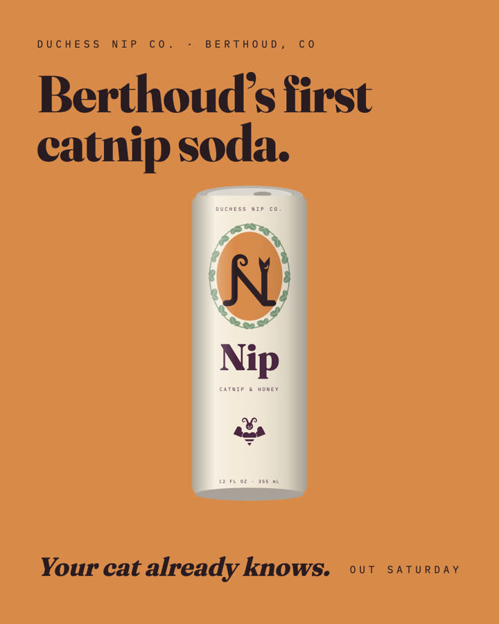
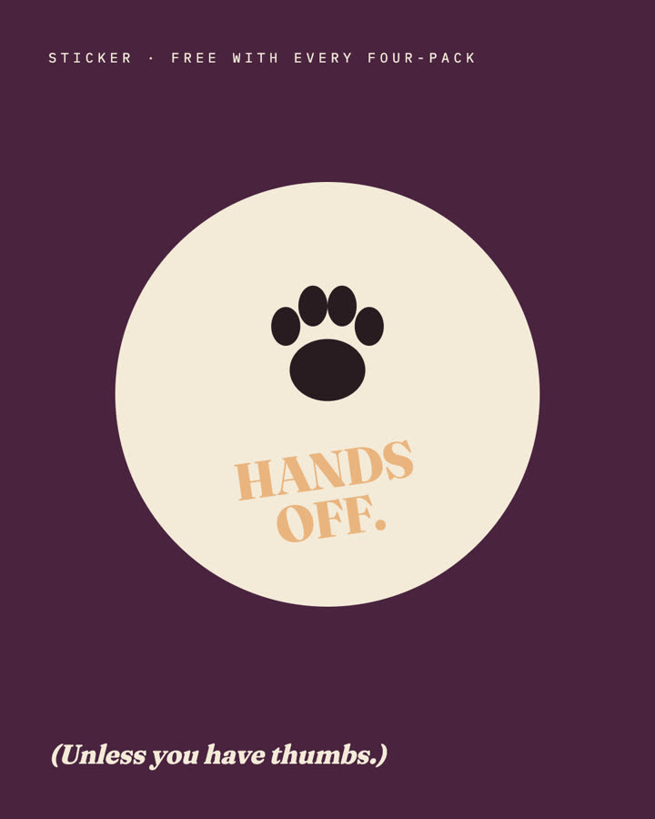
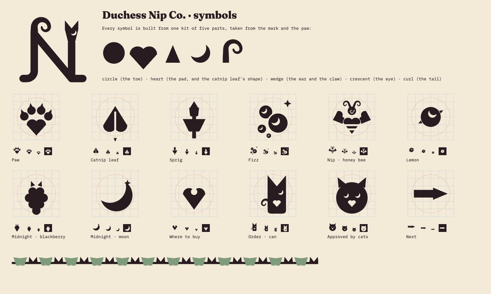
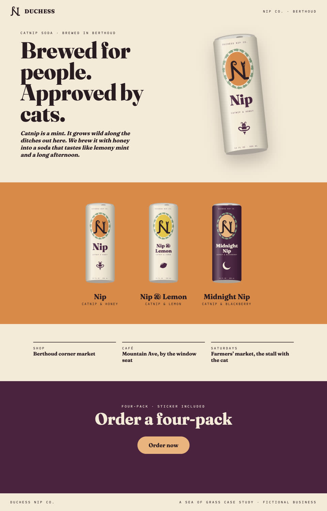
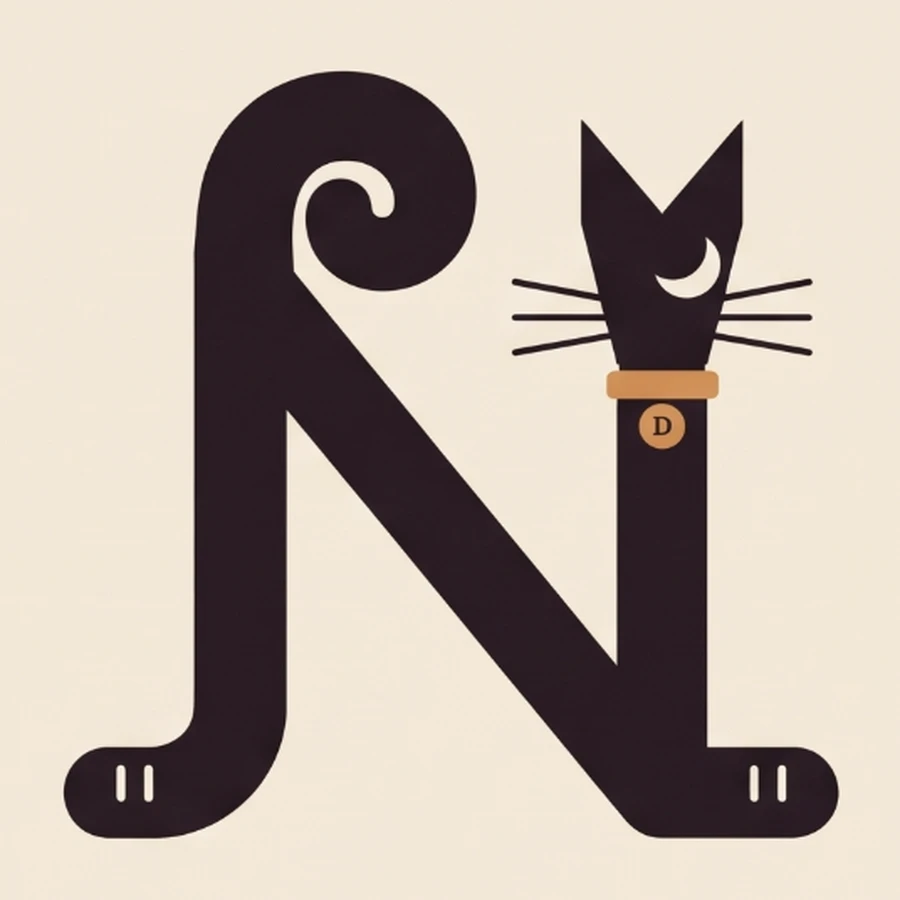
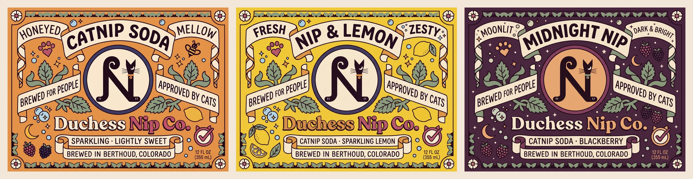
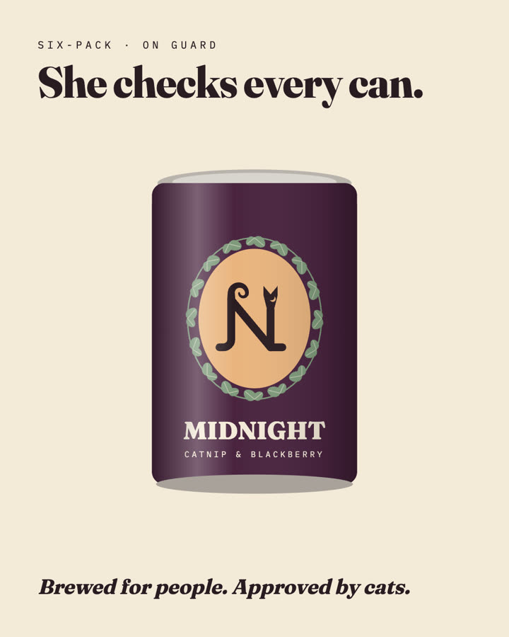

Fictional case study. Duchess Nip Co. is a business we made up, so you can see a whole branding job from start to finish. Nothing was sold.





Case study · Brand and identity · fictional
A whole brand from one letter.
Duchess runs a tiny soda works in Berthoud. We gave her a name, a mark, three labels, a launch and a shop, all grown from an N that is also a cat.
- 1
- mark
- 12
- symbols
- 3
- labels
- 3
- launch posts
- 1
- shop
The brief
The job, and what came of it
Rich where it counts, plain everywhere else.
The Job
Duchess brews a catnip soda. Catnip is a mint that grows wild along the ditches out on the plains; as a drink it tastes like lemony mint. She needed everything: a name, a mark, a can for three flavors, a launch around town and a place to order.
- A name with some swagger
- A mark that works from a can to a favicon
- Packaging, posts and a shop
The Outcome
Duchess Nip Co., with the line “Brewed for people. Approved by cats.” One mark sets the rules for everything else: the symbols, the labels and the shop.
- An N that is also a cat, from tail to toe beans
- Twelve symbols from one kit of five parts
- One hand-drawn tin label per flavor
The brand system
The brand system
Four parts, all grown from the N-cat.
Primary logo mark

The N is a cat sitting tall: the left stem curls into a tail, the right stem is the neck, topped by a wedge head with a moon for an eye and whiskers. A ginger collar carries a D tag, and both feet end in toe beans on the baseline.
Icon system
Twelve symbols on one block grid taken from the mark: the catnip leaf and sprig, the paw with its heart pad and claws, the bee for Nip, the cat-can for ordering. Each sits on a 6 × 6 block canvas and is tested at 24 and 16 px, and reversed.
Core palette
- Ink#2A1B22type, the mark
- Cream#F4EAD9the can, the ground
- Ginger#D98A4ADuchess’s coat; Nip
- Peach#EAB47Fthe label oval
- Plum#4A2340Midnight
- Leaf#7F9A7Cthe catnip border
- Lemon#E7C64ANip & Lemon
Duchess’s ginger for Nip, lemon yellow for Nip & Lemon, one deep plum for the night flavor, cream banners and the green of real catnip. No mountains, no topo lines.
Display typeface
Duchess Nip Co.
Brewed for people. Approved by cats.
IBM Plex Mono · labels · Berthoud, CO
Fraunces in its heaviest cut for the name and the headlines, its italic for the voice, and IBM Plex Mono, widely spaced, for labels. Both are free fonts.
Applications
Where it shows up
Cans, a launch around town, and a shop with a cat-proof order button.


Your turn
Want this for a real business?
A mark, colors, type and files for everything, priced before we start.